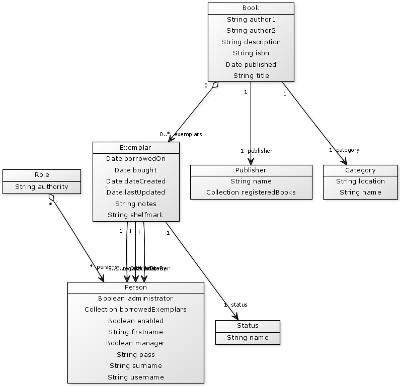

yUML is only for simple UML class diagrams
I sat down for a while and extended the Grails Create Domain UML Plugin that I wrote about a couple month ago in this post. This plugin helps to generate UML class diagrams with yUML from a Grails domain model. Unfortunately the diagrams don't show aggregations or compositions and the associations don't have a name. I fixed that, but the generated diagrams are not really useable, because yUML is only for very simple UML class diagrams as you can see in the following pictures.
Conclusion: yUML looks nice, but is only usable for very simple diagrams.
Date published: 2010-12-28
Date modified: 2010-12-28
Keywords: Grails, UML, yUML